Note esplicative
Importazione della contribuzione della Navigazione Estera Riferimento operativoPremessa Per eseguire questa funzione è indispensabile che sulla stazione di lavoro sia installata la procedura di emissione della dichiarazione di servizio / estratto conto della Navigazione Estera (versione 3.0 o superiore) che, di seguito, chiameremo procedura della Navigazione Estera. ISTRUZIONI per l'importazione Sequenza delle operazioni, in sintesi:
I controlli possono emettere i seguenti messaggi di interruzione della funzione: 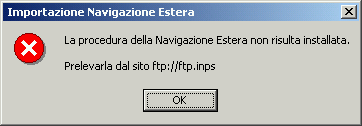 vedi manuale d'installazione della procedura della Navigazione Estera vedi manuale della procedura della Navigazione Estera 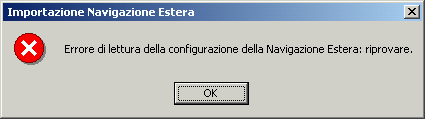 Se l’errore si ripete rieseguire la configurazione della procedura della Navigazione Estera.
I controlli possono emettere i seguenti messaggi: 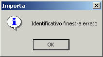 L'identificativo è assente o non è una lettera. 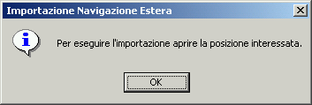 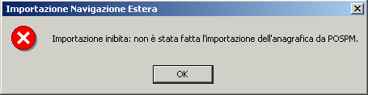 La posizione aperta è "fuori gestione": vedi istruzioni per l'importazione dell'anagrafica. 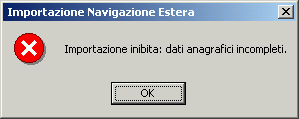 Verificare cognome, nome e data di nascita dell’assicurato. 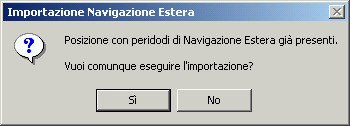 L’importazione della navigazione estera può essere eseguita più volte. La procedura scarta i periodi già presenti nella posizione (precedentemente acquisiti e/o importati) quando coincidono la codifica, le date e l’importo, o l'importo differisce solo nei decimali. 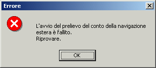 Il messaggio viene emesso quando fallisce l’avvio automatico della procedura della navigazione estera.
Dopo aver superato i controlli, viene attivata la procedura della Navigazione Estera e compare la seguente segnalazione: Possibili interruzioni del prelievo possono verificarsi per le seguenti cause: Se l'identificativo non è quello di una finestra "3270" aperta o se si verificano errori durante il colloquio con il sistema centrale, viene emesso il seguente messaggio con l'indicazione di ripetere la richiesta d'importazione, previa verifica dello stato della finestra "3270": 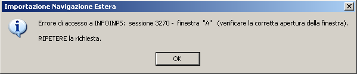 Quando la posizione non è presente negli archivi centrali (la ricerca è fatta con il cognome, il nome e la data di nascita) viene emesso il seguente messaggio con cui si suggeriscono ulteriori accertamenti che potrebbero evidenziare la necessità di una variazione della posizione (per il cognome e/o il nome la richiesta di variazione va inoltrata a Roma EUR; per la data di nascita e per gli altri dati anagrafici la variazione deve essere eseguita direttamente dall’utente con la transazione PMNE in INFOINPS): 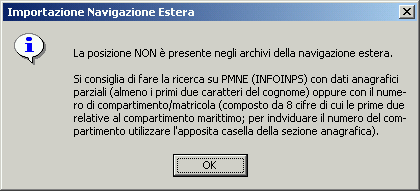 Se la posizione è presente, ma priva di contribuzione, il messaggio è il seguente: 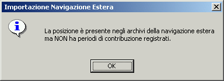
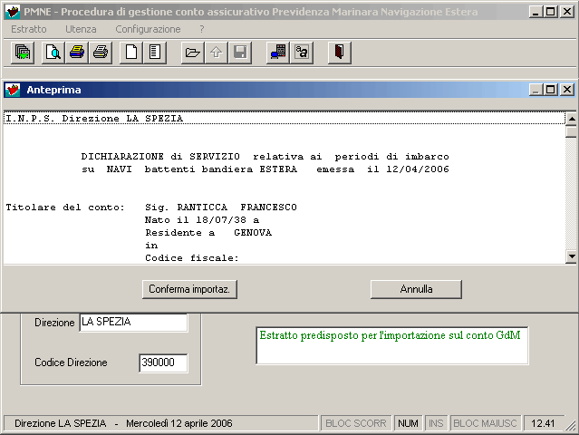 Con il comando viene emesso il seguente messaggio: 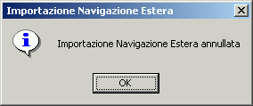 Con il comando la procedura Gente di Mare esegue una serie di controlli che possono originare i seguenti messaggi: 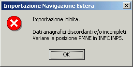 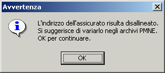 In questi casi bisogna provvedere direttamente al completamento dei dati anagrafici nell’archivio centrale della Navigazione Estera con la transazione PMNE in INFOINPS; dopo avere richiamato la posizione, attivare la funzione F5 per la variazione. Quando si presenta uno dei seguenti messaggi, bisogna chiedere la variazione del conto all’ufficio della Navigazione Estera di Roma EUR mediante la funzione "Richiesta di aggiornamento del conto" della procedura della Navigazione Estera: 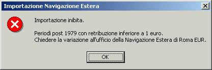 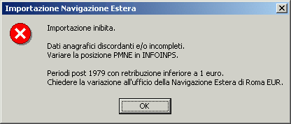 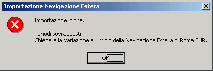 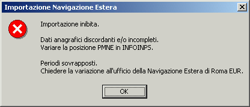 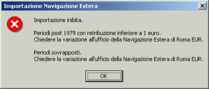 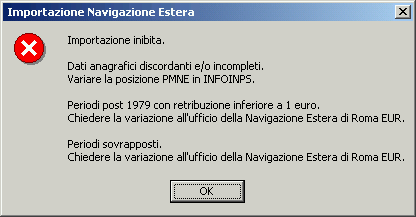
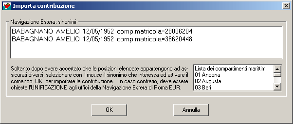 Il comando interrompe l’importazione. Il comando è operativo solo se è stata selezionata la riga interessata. 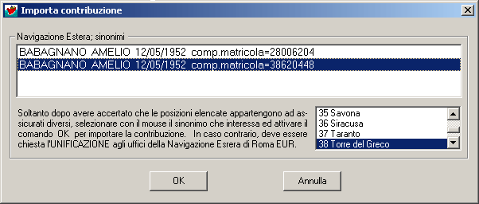 Con la selezione viene automaticamente evidenziato il compartimento marittimo. Dopo il comando OK viene chiesta la conferma per proseguire con l’importazione: 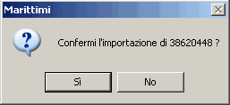 Con il comando NO viene ripristinata la lista per una nuova selezione. Dopo il comando SI, se non si verificano errori segnalati con il messaggio sotto riportato, vengono eseguite le operazioni di cui al precedente punto f.: Messaggio emesso, in caso di errore, durante la fase di preparazione della lista dei sinonimi: 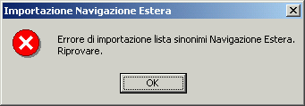 |